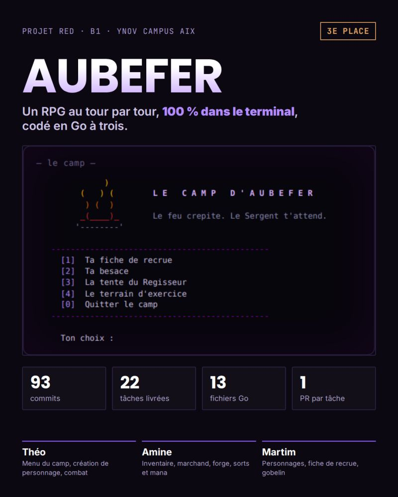

AUBEFER
Jeu de rôle jouable au clavier, dans le terminal, écrit en Go.

Contexte
Projet RED, Ynov Campus Aix, B1 (septembre 2026). 10 jours, équipe de 3. Le sujet imposait 22 fonctions sans univers : on a inventé un camp d'entraînement militaire où chaque fonction devient un lieu ou un personnage.
Fonctionnalités
- Création de personnage (Humain, Elfe ou Nain)
- Inventaire, or et marchand
- Combat au tour par tour, sorts et mana
- Expérience et montée de niveau
- Interface en ASCII art et couleurs ANSI
Mon rôle
- Menu principal, création de personnage, combat et habillage visuel
- Gestion du dépôt : conventions de commit, Trello, résolution des conflits
- 51 des 100 commits du dépôt
Technologies
Go (bibliothèque standard uniquement, 15 fichiers) · Git / GitHub · Trello